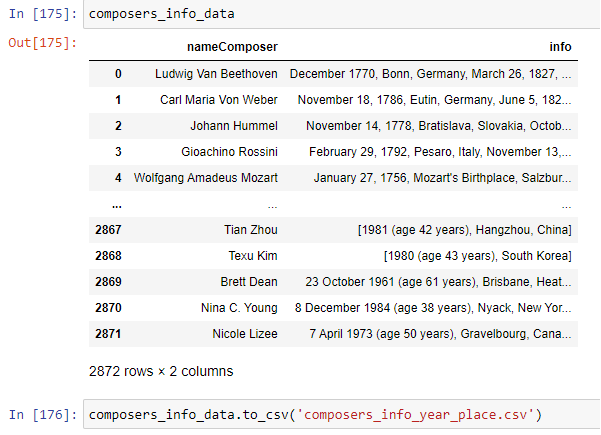
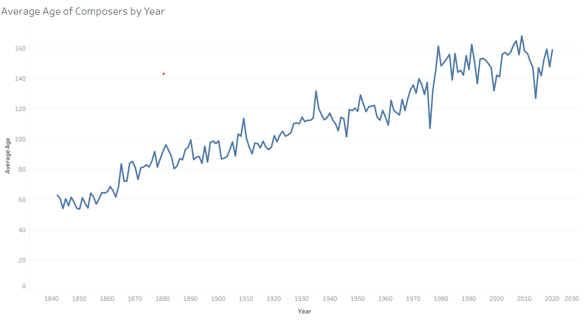

NY Philharmonic Data Analysis Project
Introduction and objectives
One of the biggest concerns contemporary composers have is how much new music professional orchestras are playing compared to old music from deceased composers. As a living composer myself, I decided to analyze performance data in order to observe how recent and diverse in origin the composers being performed were. I was able to find a data set with data from all the performances by the NY Philharmonic between 1842 and 2020. The dataset had no information about the composers’ birth year or country of origin, so I used Python to web scrape Wikipedia and Google to retrieve that information. Finally, I created a dashboard in Tableau with visualizations and interactive filters.
- Data acquisition, conversion, and cleaning in Microsoft Excel
-
Web Scraping for Composers Demographics in Python
- 2a. Wikipedia
- 2b. Google Search Engine
- Database Normalization in SQL Server
- Initial Exploratory Analysis in SQL
- Data Visualization in Tableau
1 – Data acquisition, conversion, and cleaning in Microsoft Excel
The dataset for this project was acquired from Data World. It was compiled by the New York Philharmonic and consists of data on performances realized by the orchestra since 1842. The data is made available as one JSON file with a record for each program (a set of performances where the repertoire and the performers are precisely the same). The records have nested items for dates, works performed, performers, etc.
{
"programs": [
{
"id": "00646b9f-fec7-4ffb-9fb1-faae410bd9dc-0.1",
"programID": "3853",
"orchestra": "New York Philharmonic",
"season": "1842-43",
"concerts": [
{
"eventType": "Subscription Season",
"Location": "Manhattan, NY",
"Venue": "Apollo Rooms",
"Date": "1842-12-07T05:00:00Z",
"Time": "8:00PM"
}
],
"works": [
{
"ID": "52446*",
"composerName": "Beethoven, Ludwig van",
"workTitle": "SYMPHONY NO. 5 IN C MINOR, OP.67",
"conductorName": "Hill, Ureli Corelli",
"soloists": []
},
{
"ID": "8834*4",
"composerName": "Weber, Carl Maria Von",
"workTitle": "OBERON",
"movement": "\"Ozean, du Ungeheuer\" (Ocean, thou mighty monster), Reiza (Scene and Aria), Act II",
"conductorName": "Timm, Henry C.",
"soloists": [
{
"soloistName": "Otto, Antoinette",
"soloistInstrument": "Soprano",
"soloistRoles": "S"
}
]
}
The first step was to unwrap the JSON files so that every record was represented in its own row. Unwanted data was deleted, such as all data pertaining to venues, performers, and conductors. The composers' names were changed from ‘Last Name, First Name’ to ‘Full Name’ to make it easier when web scraping for the demographics. The date was trimmed to a mm/dd/yyyy format.

2 – Web Scraping for Composers Demographics in Python
The main goal of this analysis involved analyzing data about how recent was the orchestra's repertoire and the origin of the composers being performed. Since the original dataset had no geographic or date of birth data relating to composers, I attempted to extract this information from the web using Python. I used two complementary strategies for this: (1) scrape a Wikipedia 'List of Composers by Name', which contained the date of birth information, and (2) automatically do a Google Search for each composer and extract the date of birth and place of birth from Google’s ‘People Card.’ Both had advantages and weaknesses. The information extracted from both processes was exported as .csv for further cleaning in Excel.
2a. Wikipedia
Wikipedia was only one page long, making the scraping much faster. The number of matches, however, was limited (about 1/3 of the composers in the dataset). The Wikipedia list also had no place of birth information.
After creating a list with the composers from the data set and one with the composers, birth, and death year from the wikipedia page, I checked to see if the name in one list was contained in the other. If it was, I would use the index of the matched name to retrieve the Birth and Death information.
for b, d in enumerate(data_list):
for c, w in enumerate(wiki_list):
if d in w or w in d:
result_list.append([d, b, w, c])
found = True
break
if found:
pass
else:
result_list.append([d, b, "NOT FOUND", ""])
false_count += 1
found = False
2b. Google Search Engine
Scraping Google was more time-consuming as I had to perform a Google search for each of the more than 2,800 composers in the data set. The result, however, was much more fruitful. More than 2,000 matches were achieved automatically, and geographical data was also collected.
After identifying a tag and class associated with the demographic info in the People Card, we ran a google search for each composer and extracted all strings that matched that class. Next, we merged the strings for each composer into one string that we added to a data frame using Pandas. We then exported that data frame as .csv for further cleaning.
//Performs a google search for each item in data_list
for c, i in enumerate(data_list):
comp_string = i.replace(" ","+")
url = 'https://www.google.com/search?q=' + comp_string + 'composer' #Google Search URL
page = requests.get(url)
print(page, c, '/2871')
google_full_page = BeautifulSoup(page.text, 'html.parser')
person_card = google_full_page.find_all('span', class_='BNeawe tAd8D AP7Wnd') #Class associated with the People Card
list_strings = [item.text.strip() for item in person_card]
return_list.append([c, i, list_strings[:2]])

3 – Database Normalization in SQL Server
After compiling the composers’ demographics data into its own table, we imported the data into an SQL Server using SSMS and normalized it, separating the data into three tables: one for the composers’ data, one for the works’ data, and one that contained information about all performances and referenced the other tables through foreign keys.
4 – Initial Exploratory Analysis in SQL
On the SQL server, I did some initial queries to find out how dispersed the data was. For example, 1387 composers were performed only one time, while Beethoven was performed 4419 times.
/*Number of composers performed a single time*/
with singlePerformer# as
(
select composer_info$.nameComposer,
count(programs_works$.Date) as number_of_performances
from programs_works$
join composer_info$
on composer_info$.composerID = programs_works$.composerID
group by composer_info$.nameComposer
having count(programs_works$.Date) = 1
) select count(number_of_performances)
from singlePerformer#
In addition to that, over 35% of the pieces performed were from composers from Germany, the United States, Russia, Austria, and France.
--Percentile of performances per country
select composer_info$.Country,
(count(programs_works$.Date)/64862.0)*100 AS percentile
from programs_works$
join composer_info$
on composer_info$.composerID = programs_works$.composerID
where year(programs_works$.Date) > 1950 and country is not null
group by composer_info$.Country
order by count(programs_works$.Date) desc
Curiously, 77 performances featured composers less than 15 years old. That’s explained by the fact that the NY Philharmonic has a ‘Very Young Composers’ series featuring high school students. The youngest composers to be played, Graydon Hanson and Paloma Alonso, were only 9 years old.
/*Composer age by performance*/
select programs_works$.Date, composer_info$.nameComposer,
year(programs_works$.Date)-composer_info$.Birth as years_old
from programs_works$
join composer_info$
on composer_info$.composerID = programs_works$.composerID
where composer_info$.Birth is not null
group by programs_works$.Date,composer_info$.nameComposer,
composer_info$.Birth
order by years_old
5 – Data Visualization in Tableau
Finally, I have imported the database into Tableau to create the visualizations for the Dashboard. The geographic and age information is clearly displayed, along with filters that allow the user to visualize data for a certain range of time or from a specific group of countries. For example, one can notice how, since 1842, the average age of performed composers has grown steadily. The most performed composer, Beethoven, was 56 years old when first performed. In 2020, he was 250 years old.

Another interesting insight is that if we filter the date range to 1842-1920, with the exception of Australia, no country from the south hemisphere had a composer performed, an all—a great contrast with the 72 total countries represented in NY Philharmonic concerts by 2020.